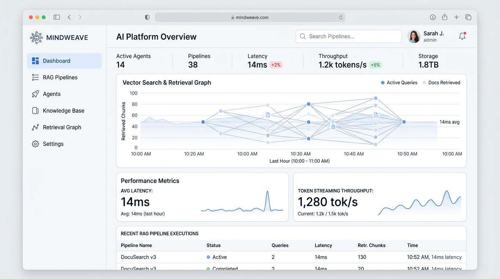

LLMs & Agents
Production Ready
14ms Latency
⚡ 1,280 tok/s
🎯 98.7% Accuracy
MindWeave — Autonomous RAG & Vector Knowledge Graph
Platform retrieval-augmented generation multi-agen untuk enterprise. Menggabungkan pencarian dense vector (Pinecone) dan sparse keyword (BM25) dengan reranking otomatis untuk mereduksi halusinasi hingga 92% pada 500k+ dokumen teknis.
Llama-3
LangChain
Pinecone
FastAPI
Docker
vLLM